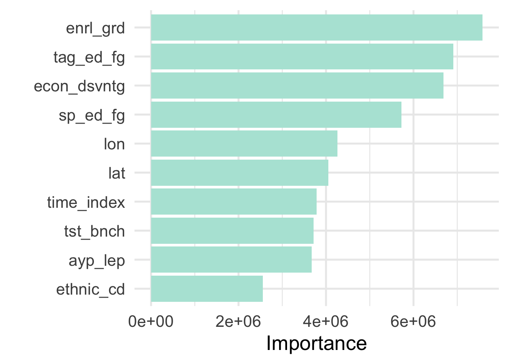
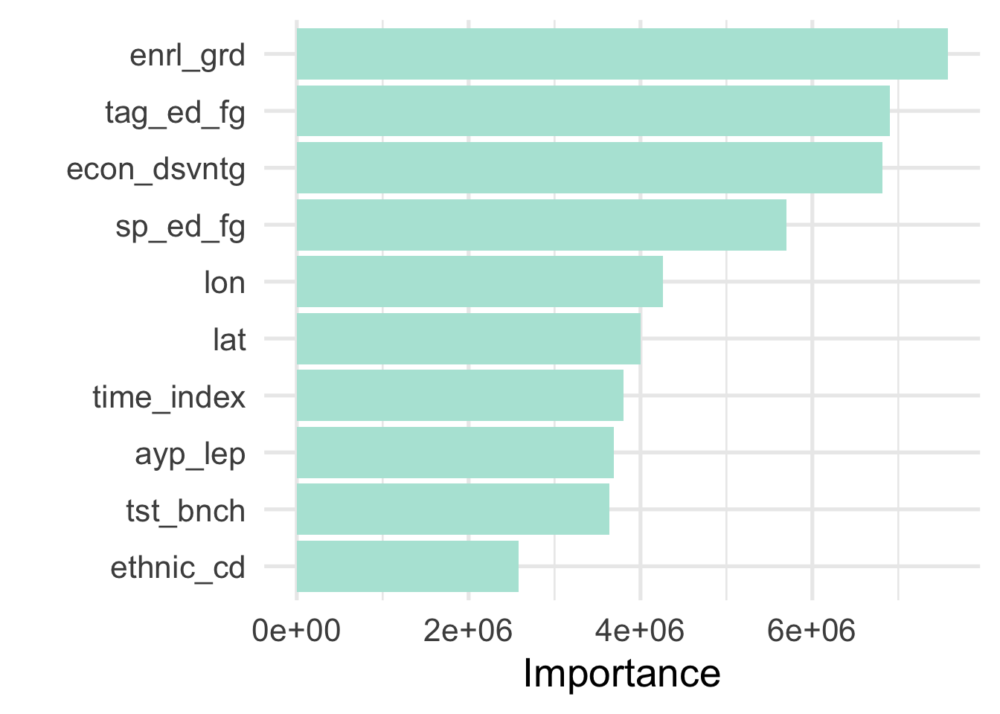
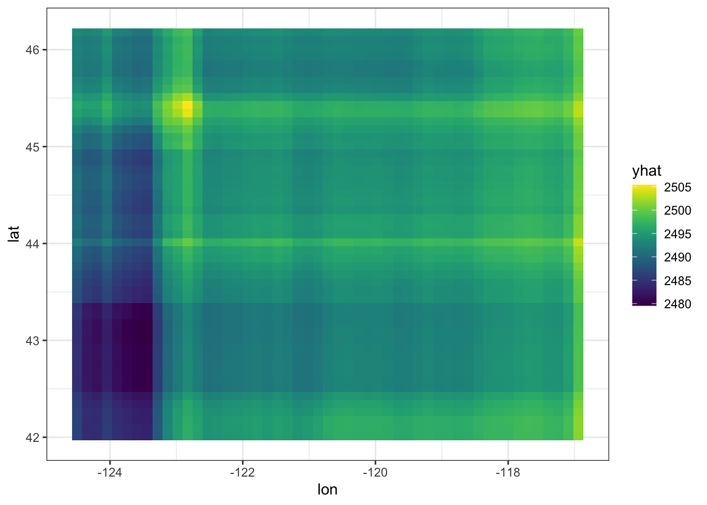
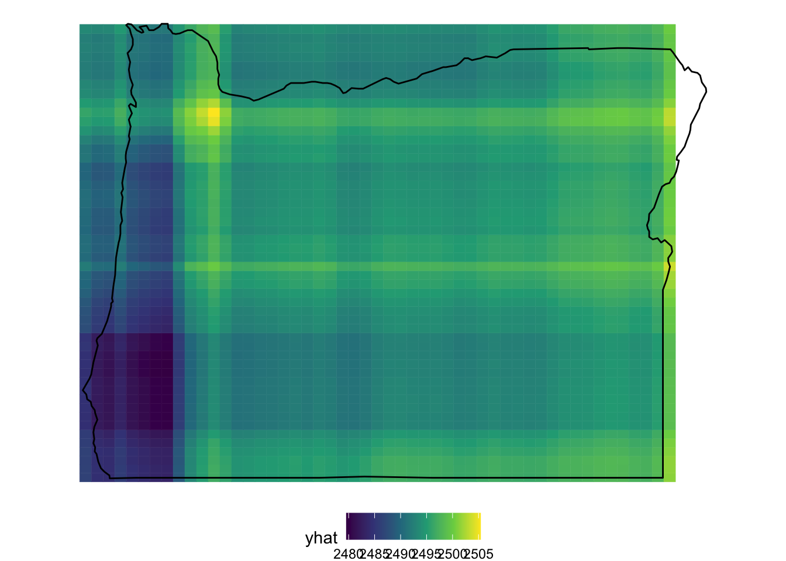

5.3 Feature and model interpretation
A considerable benefit of decision tree model is that they are relatively easy to understand, in terms of how predictions are made. It’s perhaps less clear why specific splits have been made, but it’s relatively straightforward to communicate with stakeholders how predictions are made. This is because the tree itself can be followed, like a road map, to the terminal node. The tree is just a series of if/then statements. Unfortunately, this ease of interpretation all goes out the window with bagged trees and random forests. Instead of just building one decision tree, we are building hundreds or even thousands, with each tree (or at least most trees) being at least slightly different. So how do we communicate the results of our model with stakeholders? How can we effectively convey how our model makes predictions?
Perhaps the most straightforward way to communicate complex models with stakeholders is to focus on feature importance. That is, which features in the model are most important in establishing the prediction. We can do this with {ranger} models using the {vip} package (vip stands for variable importance plots).
In a standard decision, a variable is selected at a given node if it improves the objective function score. The relative importance of a given variable is then determined by the sum of the squared improvements (see {vip} documentation). This basic idea is extended to ensembles of trees, like bagged trees and random forest, by computing the mean of these importance scores across all trees in the ensemble.
To obtain variable importance scores, we first have to re-run our {ranger} model, requesting it compute variable importance metrics. We do this by specifying importance = "impurity" (which is the Gini index for classification problems).
# specify the model and request a variable importance metric
rf_mod_reg_final <- rand_forest() %>%
set_mode("regression") %>%
set_engine("ranger") %>%
set_args(mtry = rf_reg_fits2$mtry[1],
min_n = rf_reg_fits2$min_n[1],
trees = 1000,
importance = "impurity")
# fit the model
rf_fit_reg_final <- fit(rf_mod_reg_final,
score ~ .,
processed_reg)And now we can request variable importance scores with vip::vi(), or a variable importance plot with vip::vip(). Let’s first look at the scores.
## # A tibble: 31 x 2
## Variable Importance
## <chr> <dbl>
## 1 enrl_grd 7574484.
## 2 tag_ed_fg 6912953.
## 3 econ_dsvntg 6686036.
## 4 sp_ed_fg 5728096.
## 5 lon 4258608.
## 6 lat 4057123.
## 7 time_index 3781738.
## 8 tst_bnch 3715267.
## 9 ayp_lep 3672420.
## 10 ethnic_cd 2556395.
## # … with 21 more rowsThe results of this investigation are not entirely surprising. The enrl_grd the student is in is the most important predictor of their score. Following grade level, the students’ economic disadvantaged status is the most predictive feature in the model, following a long history of evidence documenting differential achievement by socioeconomic status. Students classified as talented and gifted (TAG), and those who received special education services are the next two most predictive variables, followed by the physical location of the school (lat = latitude and lon = longitude). Each of these variables would be among those that we might have guessed, a priori, would be the most predictive.
Let’s look at a plot showing the relative importance of the features in our model.

Our inferences here are similar, but this view helps us see more clearly that the first three variables are similarly important, then there is a bit of a dip for with special education status, followed by a sizeable dip for latitude and longitude. The tst_bnch feature is essentially a categorical version of grade level (so we are modeling it as both a continuous and categorical feature; the merits of such an approach could be argued, but we see that we are getting improvements from both versions).
With bagged trees and random forests, we can also look at variable importance in a slightly different way. Rather than summing the contributions for each tree, and taking the average across trees, we can compute the OOB error for a given tree, then shuffle the values for a given variable and re-compute the OOB error. If the variable is important, the OOB error will increase as we perturb the given variable, but otherwise the error will stay (approximately) the same (see Wright, Ziegler, and König, 2016).
To get this purmutation-based importance measure, we just change importance to "purmutation". Let’s do this and see if the resulting plot differs.
rf_mod_reg_final2 <- rand_forest() %>%
set_mode("regression") %>%
set_engine("ranger") %>%
set_args(mtry = rf_reg_fits2$mtry[1],
min_n = rf_reg_fits2$min_n[1],
trees = 1000,
importance = "purmutation")
rf_fit_reg_final2 <- fit(rf_mod_reg_final,
score ~ .,
processed_reg)
vip(rf_fit_reg_final2$fit)
As we can see, there are a few small differences, but generally the results agree, providing us with greater confidence in the ordering variable importance. If the results did not generally align that may be evidence that our model is unstable and we would likely want to probe our model a bit more.
Inspecting variable importance helps us understand which variables contribute to our model predictions, but not necessarily how they relate to the outcome. For that, we can look at partial dependency plots via the {pdp} package (which is developed by the same people who created {vip}).
Partial dependency plots show the marginal effect of a feature on the outcome. This can help us to understand the directionality of the effect and whether it is generally linear or not. For example, we would probably expect that students’ scores would increase roughly linearly and monotonically with enrl_grd. To see if that’s the case we case we use the pdp::partial() function.
library(pdp)
partial(rf_fit_reg_final$fit,
pred.var = "enrl_grd",
train = processed_reg,
plot = TRUE,
plot.engine = "ggplot2")
And we can see that, yes, the relation is roughly linear and monotonically increasing.
What if we want to explore more than one variable? Let’s look at the geographic location of the school.
partial(rf_fit_reg_final$fit,
pred.var = c("lon", "lat"),
train = processed_reg,
plot = TRUE,
plot.engine = "ggplot2")
Because this is geographic data, and we know the data come from Oregon (although they are simulated) we can interpret this as if we were looking at a physical map. One notable aspect is that there is a fairly clear band running north/south in the western part of the state. This is roughly where I-5 runs and where many of the more populous towns/cities are located, including Ashland/Medford in the south, Eugene around the center, and Portland in the north. We could even overlay an image of Oregon here, which actually helps us with interpretation a bit more.
 Note that, when the PDP is created, it just create a grid for prediction. So when we overlay the map of Oregon, we see some areas where the prediction extends outside of the state, which are not particularly trustworthy.
Finally, we might also be interested in the individual variability of a feature. Let’s again look at the enrolled grade of students. In this case, we’ll create individual conditional expectation plots, or ICE curves, which are the equivalent to PDP’s but for individual observations. The {pdp} package can again create these for us. The process for creating them is essentially equivalent, but we provide one additional argument, ice = TRUE. Note that we can use plot = TRUE here too but I’ve just output the values to have a bit more control of how the plot renders.
ice_grade <- partial(rf_fit_reg_final$fit,
pred.var = "enrl_grd",
train = processed_reg,
ice = TRUE)
ggplot(ice_grade, aes(enrl_grd, yhat)) +
geom_line(aes(group = yhat.id),
color = "gray40",
size = 0.1,
alpha = 0.1) +
stat_summary(geom = "line", fun = "mean")
And as we would likely expect, there is a lot of variation here in expected scores across grades.
Bagged trees can often lead to better predictions than a single decision tree by creating ensembles of trees based on bootstrap resamples of the data and aggregating the results across all trees. Random forests extend this framework by randomly sample \(m\) columns at each split of each tree that is grown in the ensemble (or forest) which can help decorrelate the trees and, often, lead to better overall predictions. Unfortunately creating an ensemble of trees also makes feature and model interpretation a bit more difficult. Tools like variable importance and partial dependence plots can be an efficient means of communicating how and why a model is making the predictions it is, while still maintaining strong overall model performance. For more information on these and other methods, see Molnar, 2020.